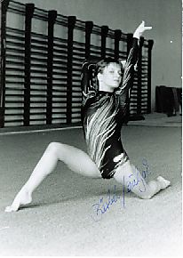

Barbel Wielgoss (GDR)
1988 Swiss Cup AA Silver Medalist
1989 DTB Cup AA Bronze Medalist

Barbel was born in Rostock and trained at SC Empor Rostock. She had a foot operation in September 1990, but was unable to regain her former performance level and retired in May 1991.
Competition Results
1987 1988 1989 1990 This page was created on September
12, 2004 and was last updated on January 23, 2021.
DTV Cup: 5th AA
GDR Championships: 2nd V, 3rd UB
GDR-NOR-SWE Meet: 1st Team, 6th AA
Chunichi Cup: 16th AA, 5th UB, 8th V
DTB Cup: 9th AA, 3rd V, 3rd UB
Gander Memorial: 6th AA
Jr. European Championships: 11th AA, 6th FX, 7th V, 7th UB
Swiss Cup: 2nd AA
Tokyo Cup: 3rd V, 3rd UB
Chunichi Cup: 5th AA
DTB Cup: 3rd AA, 1st UB, 3rd B, 4th V, 4th FX
DTV Cup: 3rd AA
European Championships: 18th AA
GDR Championships: 3rd AA, 1st UB, 1st FX, 2nd V
GDR-FRA Dual Meet: 1st Team, 3rd AA
SUI-GBR-GDR Meet: 1st Team, 2nd AA
Tokyo Cup: 7th UB, 8th B
World Championships: 5th Team, 9th AA
European Championships: 21st AA, 4th B
Olympic Cup: 10th AA
USA-GDR Dual Meet: 2nd Team, 5th AA
© Gymn Forum